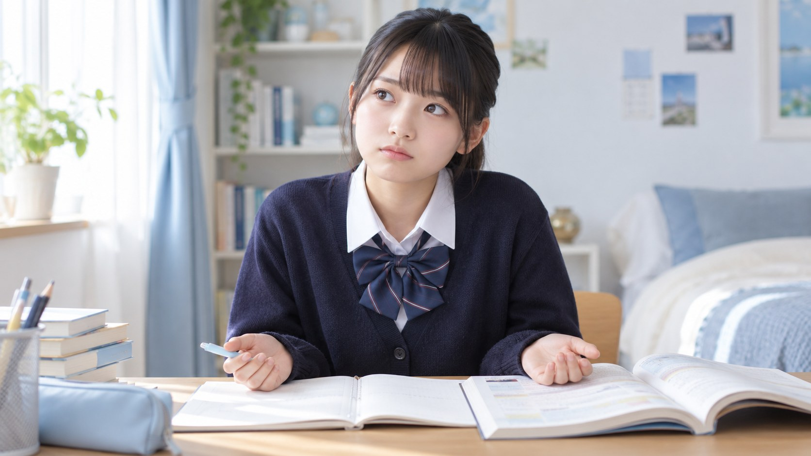
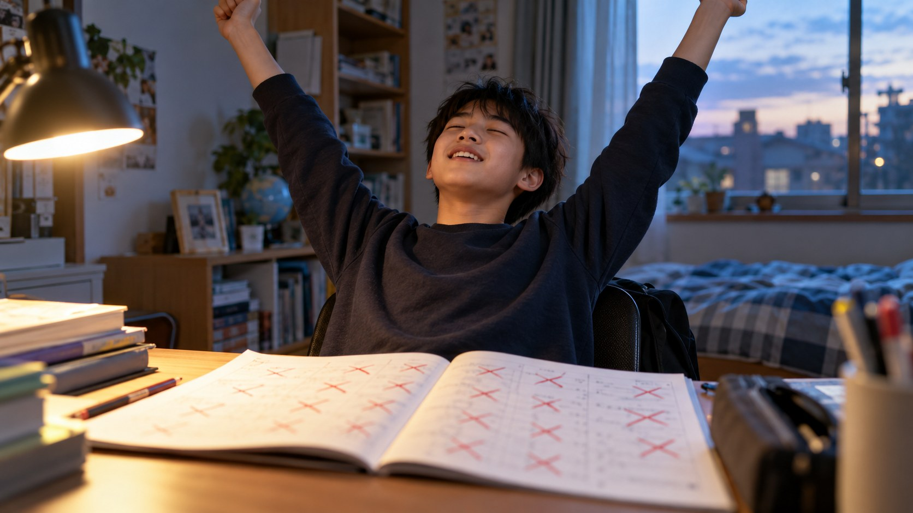
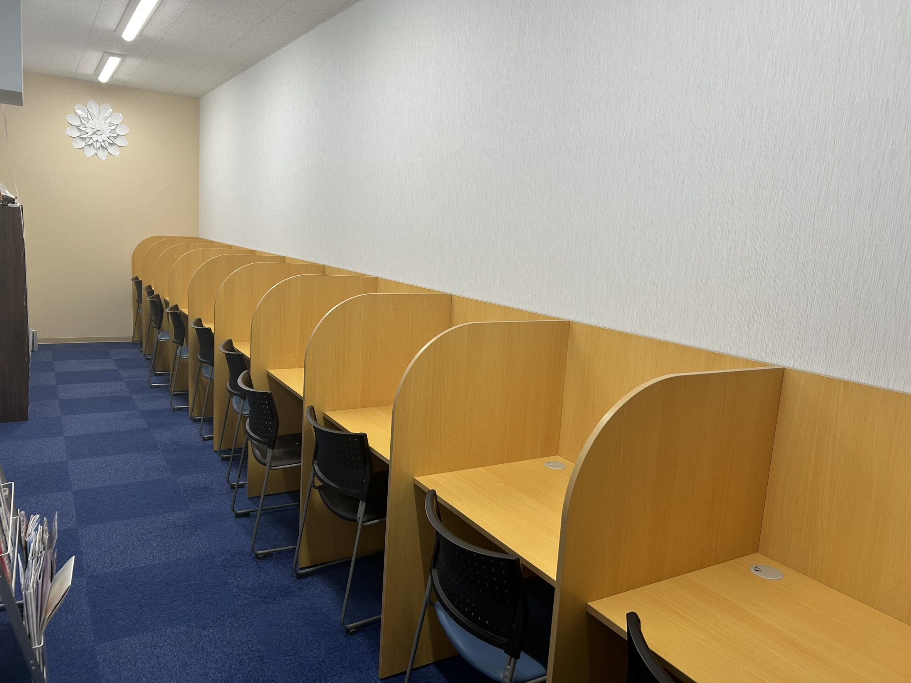
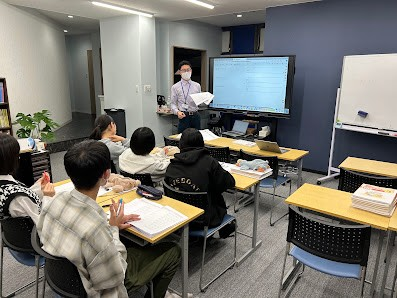
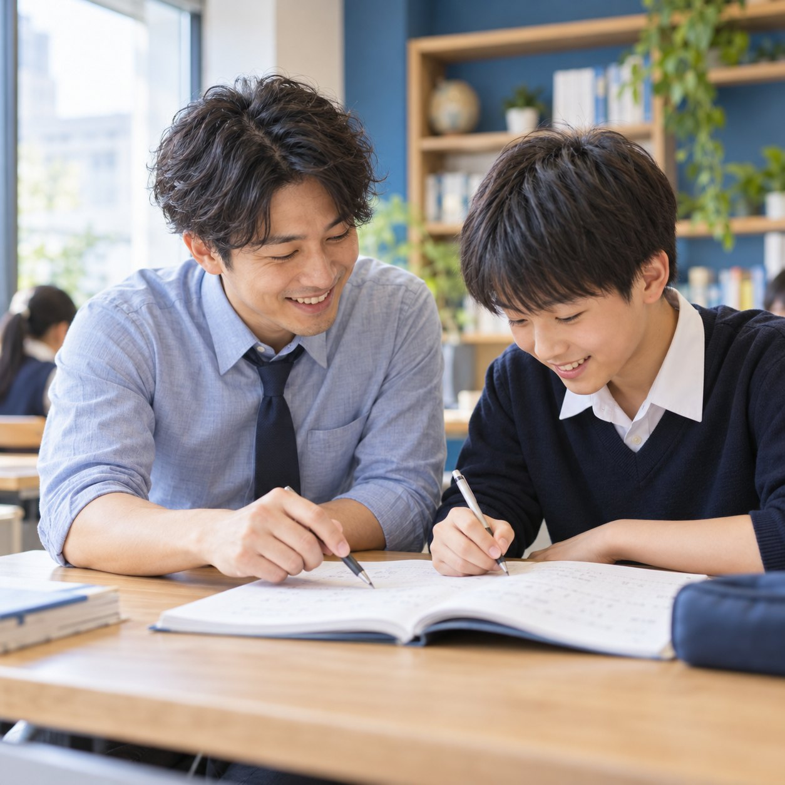
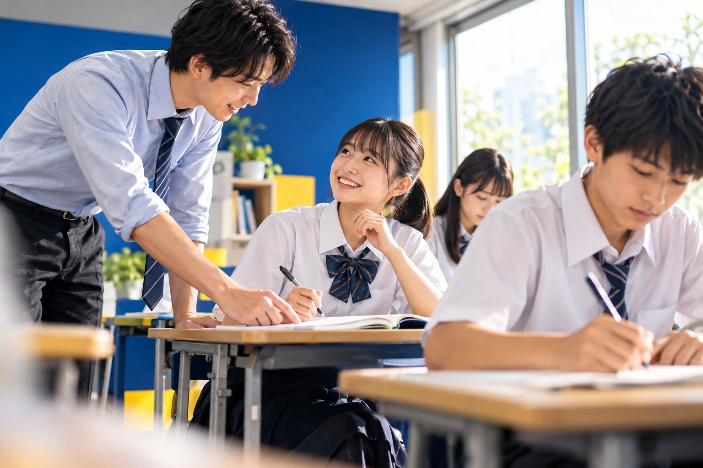

01勉強の仕方がわからない机には向かっている。でも、何から始めて、どう進めればいいのかがわからない。
学習塾SeeDは子供に頑張らせる塾ではなく
努力するかっこよさを教える塾です
A LITTLE STEP, A BIG CHANGE.

01勉強の仕方がわからない机には向かっている。でも、何から始めて、どう進めればいいのかがわからない。
02教科書を眺めるだけ読んでいると、わかった気になる。けれど、問題になると手が止まってしまう。
03勉強じゃなくて作業になっているノートを埋めることや、宿題を終わらせることが目的に。「なぜそうなる？」が置き去りに。

04最後は答えを覚えて終わり間違えた理由を考える前に、答えを覚えてしまう。少し形が変わると、また解けなくなる。
その一歩目から、一緒に考えていきます。
小さな「できた！」が、次の「やってみたい」になる。



見て、わかる。解いて、身につく。
学ぶ時間を、もっと前向きに。
SeeDで大切にしたい、学びの変化。

中学校の勉強に向き合う習慣から。自分に合う学び方を見つけよう。
お子さまの学習状況やご希望を伺い、一緒に通い方を考えます。まずは入塾面談でご相談ください。
入塾時の確認内容は、入塾面談でご案内します。
ご利用条件や手続きについては、入塾面談・お問い合わせからご確認ください。
無料体験をご案内しています。日程や内容は公式フォームからご相談ください。
希望の種を育てる学習塾SeeD
まずは教室で、
学ぶ楽しさに触れてみませんか。